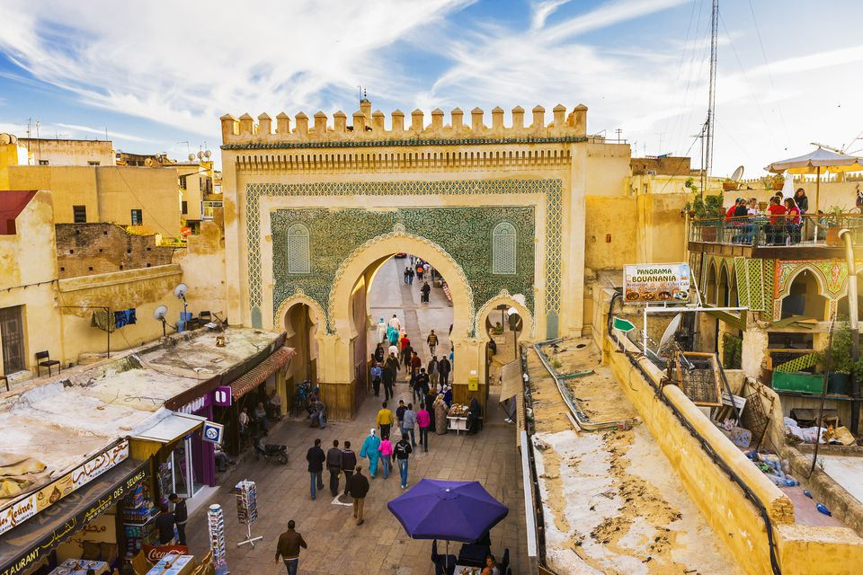
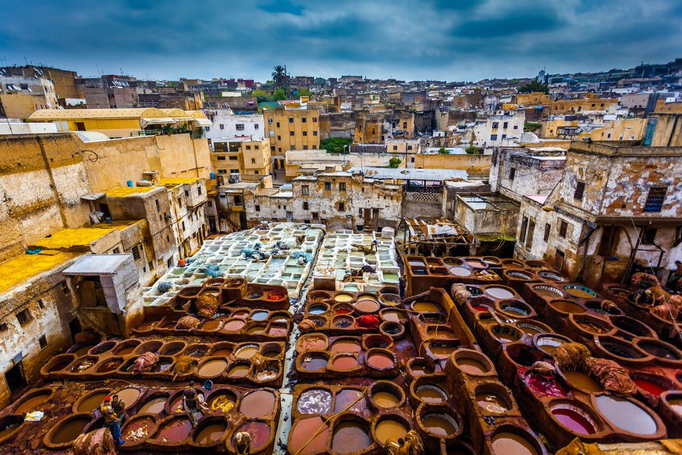
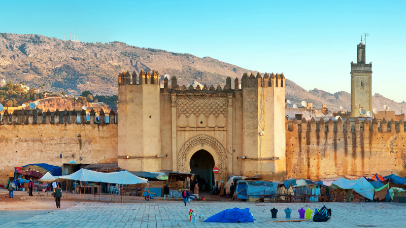

The most complete medieval city of the Arab world, Fes is a strange and appealing mix of Middle Ages meets the modern world.

Fes was Morocco's capital for more than 400 years and is still considered the religious and cultural center of the country today. The extraordinary medina city of Fes El Bali is worth a few days walking in itself, and the city tanneries make for a fascinating visit.

Other highlights include the Merenid Tombs, the Royal Palace and the Mellah, or Jewish Quarter. Many visitors find that the city is less touristy and therefore more authentic than Marrakesh.